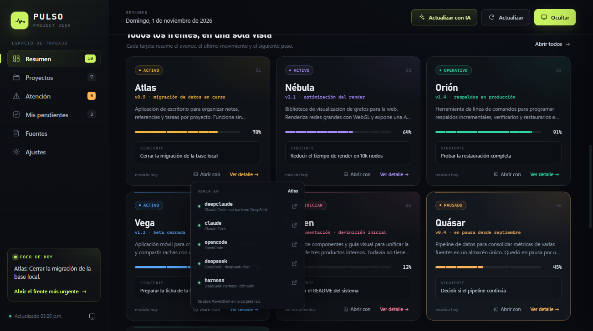
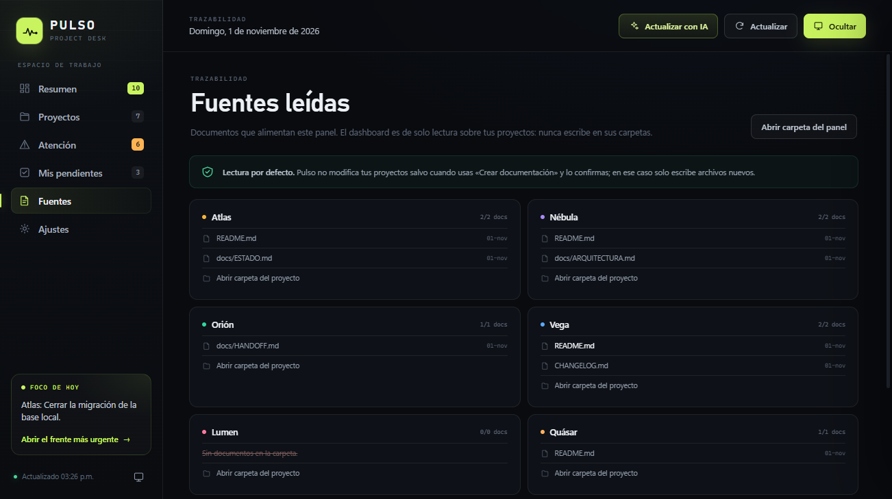
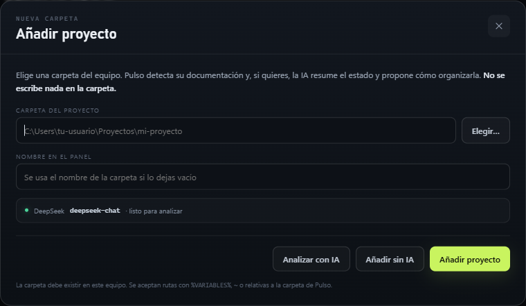
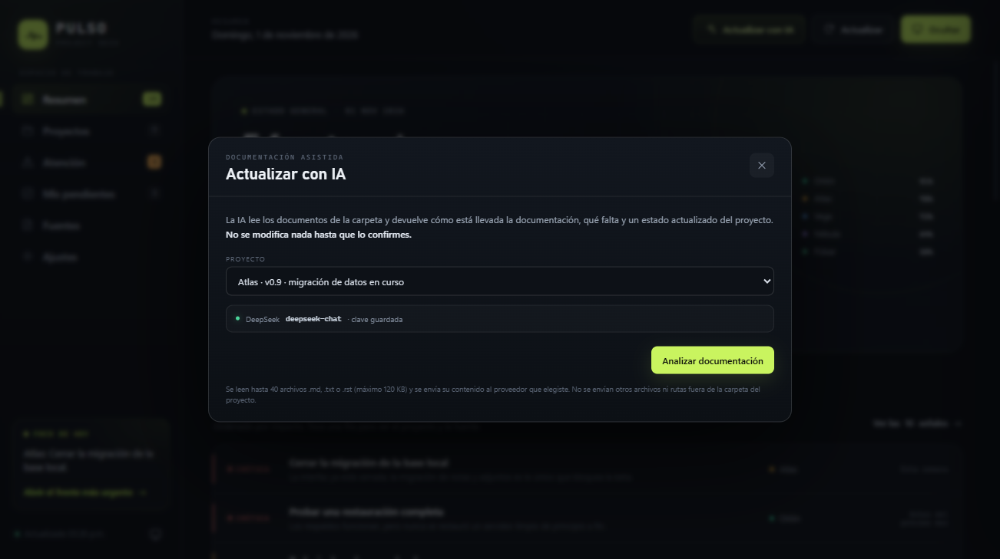
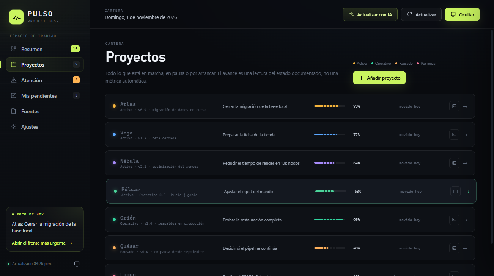
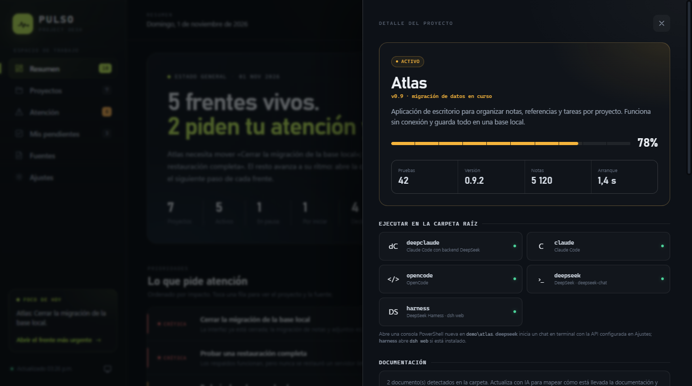
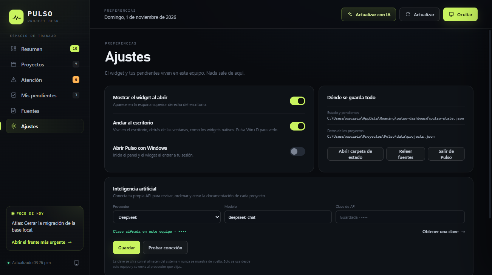
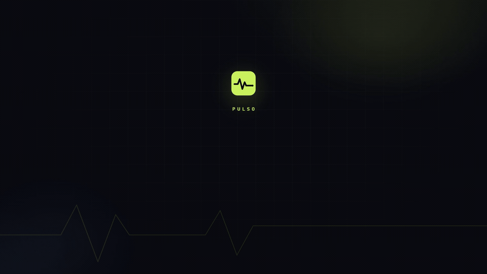

Estado real
README, handoffs y notas de cada carpeta. Sin inventar métricas ni fechas.
El estado real de cada proyecto, sus pendientes y lo que sigue. Sin ruido, sin cuentas y sin salir de tu equipo.

Pulso no es otra lista de tareas. Lee la documentación que ya existe en tus carpetas y la convierte en una vista clara para decidir qué sigue.
README, handoffs y notas de cada carpeta. Sin inventar métricas ni fechas.
Siguiente paso, riesgos y decisiones abiertas, ordenados por prioridad.
Tus pendientes y el radar de avance siempre a mano, incluso con Win+D.
Relee carpetas, descubre documentos nuevos y avisa de lo que falta. Sin claves.
Elige una carpeta, ponle nombre y añádela con o sin análisis por IA.
Sin cuentas ni telemetría. Tus datos y tus claves se quedan en tu equipo.
Selecciona cualquier proyecto del equipo. Pulso detecta su documentación y lo incorpora al panel.
README, handoffs, notas y changelogs. Convierte el texto disperso en estado, prioridades y riesgos.
Abre el siguiente paso, añade un pendiente o lanza un agente en la carpeta del proyecto.
Pulso abre tu agente en la carpeta exacta del proyecto. Tú escribes la tarea; el panel sigue siendo la vista de estado.
Claude Code, OpenCode, DeepSeek Harness o deepclaude. El chat de DeepSeek con tu API viene incluido.
Entra en su detalle desde el resumen, la cartera o la tabla de proyectos.
Elige el agente. Se abre una consola PowerShell en la carpeta raíz del proyecto.
El agente trabaja con el contexto que ya está en la carpeta. Pulso sigue mostrando el estado.
Si un agente aparece desactivado, revisa que esté instalado y disponible en el PATH.

Abre tu agente CLI en la carpeta del proyecto y pega uno de estos prompts. No necesitas instalar nada más: Pulso lee los mismos archivos y verás los cambios al pulsar Actualizar.
Claude Code, OpenCode, Codex o cualquier agente CLI.
Empieza por entender el proyecto; después pide cambios.
Pulso relee la documentación y muestra el nuevo estado.
También puedes pedirle al agente que actualice la documentación por ti. Pulso no necesita una integración especial para eso.
Lee README.md y la documentación de esta carpeta. Devuelve el estado real, los riesgos y el siguiente paso. No modifiques ningún archivo.
Revisa los cambios de esta sesión y actualiza la documentación. Crea solo los archivos que falten y no sobrescribas los existentes. Al final, resume qué cambió.

El botón Actualizar relee las carpetas, descubre documentos nuevos y te dice cuántos proyectos tienen el material al día. No llama a ninguna API.
Elige una carpeta y, si quieres, analízala con tu propia API. Pulso propone el estado real, el mapa de documentación y los archivos que faltan. Nada se escribe hasta que lo confirmas.


Conecta DeepSeek, OpenAI o Claude desde Ajustes. La clave se cifra con el almacén del sistema y nunca se muestra de vuelta. Si no configuras nada, el panel sigue funcionando.
Solo se envía el texto de los documentos del proyecto al proveedor que elijas. No se envían rutas externas, credenciales ni otros archivos.

El widget vive detrás de tus ventanas y se queda ahí al pulsar Win+D. Añade pendientes, marca tareas y consulta el radar sin abrir el panel.
Datos ficticios de la demo. Sin nombres, rutas ni claves reales.




Requiere Windows 10 u 11, Node.js 20 o superior y npm. Clona el repositorio, instala y abre el panel.
# clonar e instalar
git clone https://github.com/notSickboy/Pulso.git
cd Pulso
npm install
npm startnpm run demo
Solo cuando usas Crear documentación y lo confirmas. En ese caso escribe únicamente archivos nuevos dentro de la carpeta y nunca sobrescribe uno existente.
No. El panel, el widget y el botón Actualizar funcionan sin ninguna clave. La IA es opcional y solo se usa cuando tú la configuras.
Los pendientes y ajustes en %APPDATA%\pulso-dashboard. La cartera de proyectos en data\projects.json. La clave de IA se guarda cifrada y no se incluye en el repositorio.
El panel es Electron y puede ejecutarse, pero el widget anclado al escritorio y los lanzadores están pensados para Windows 10/11.
DeepSeek, OpenAI y Claude. Puedes cambiar el modelo y probar la conexión desde Ajustes antes de usar la IA.